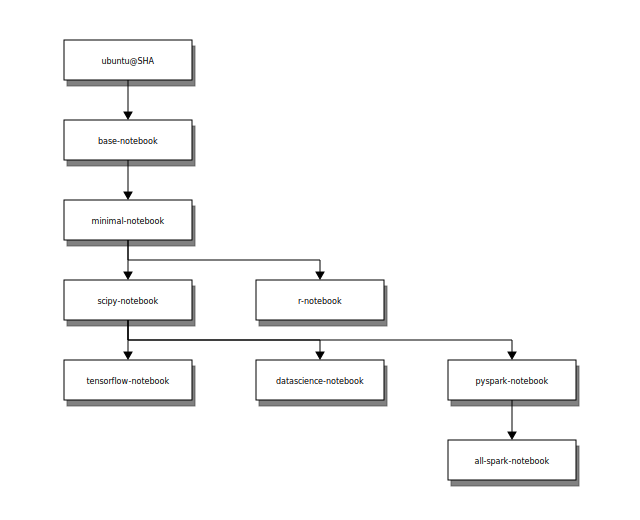

DockerHub Resource
記錄我從 DockerHub 上面使用過的 image，同時也記錄自己使用的一些心得和誤區。
--
Content:
章節結構:
- alpine 版本
- DockerHub login
OS system
- ubuntu
- centos
website
- thenetworkchuck/nccoffee:frenchpress: 8081
- DockerCon2020 sample(littlefish0331/hello-world): 8080
- Gitbook: 4000(TWCC-VCS note), 4001(FAE no.72), 4002(KVGH DAS tutorial)
Database
- MSSQL: 1433
- Postgress: 5432
- mariadb: 3307
- mysql: 3306
- BigObject: 3308, 9090, 9091
- ElasticSearch: 9200, 9300
Program
- R+Rstudio(+python2+python3): 8787, 3838(shiny)
- Python+jupyter notebook/lab: 8888, 9999
- jupyter notebook mini/r/scipy: 8801, 8802, 8803
- R+Python+Julia+jupyter notebook/lab: 8800, 9900
- datascienceschool/rpython: 。裡面有 Ubuntu, R, Python, Rstudio, postgres, jupyter notebook, ssh
- Grafana: 3000
Others
- jenkins: (8082, 50000), (8083, 50001)
- custom: ubuntu, R, rstudio, Python, jupyter notebook, Julia
alpine 版本
- Alpine - Docker —— 从入门到实践
- 很多官方 docker 镜像都出了基于 alpine 的版本，相较于正常的版本， alpine 版会有什么坑吗？ - V2EX: 說明為何其他版本存在的必要性。
很多 image 都有 alpine版本的 tag，到底 alpine 算什麼。
Alpine 操作系統是一個面向安全的輕型 Linux 發行版。
它不同於通常 Linux 發行版，Alpine 採用了 musl libc 和 busybox 以減小系統的體積和運行時資源消耗，但功能上比 busybox 又完善的多，
因此得到開源社區越來越多的青睞。在保持瘦身的同時，Alpine 還提供了自己的包管理工具 apk，
可以通過 https://pkgs.alpinelinux.org/packages 網站上查詢包信息，也可以直接通過 apk 命令直接查詢和安裝各種軟件。
Alpine 由非商業組織維護的，支持廣泛場景的 Linux發行版，
它特別為資深/重度Linux用戶而優化，關注安全，性能和資源效能。
Alpine 鏡像可以適用於更多常用場景，並且是一個優秀的可以適用於生產的基礎系統/環境。
目前 Docker 官方已開始推薦使用 Alpine 替代之前的 Ubuntu 做為基礎鏡像環境。
這樣會帶來多個好處，包括鏡像下載速度加快，鏡像安全性提高，主機之間的切換更方便，佔用更少磁盤空間等。
==但是我個人目前仍推薦使用以 Ubuntu 做為基礎鏡像環境==
DockerHub login
就是簡單的一個指令，然後輸入帳號密碼。
docker login
> <DockerHub_username>
> <DockerHub_password>OS system
這個我只有下載 image，但是如果之後要 custom image 會很方便。
- ubuntu
- centos
--
ubuntu
docker pull ubuntu--
centos
docker pull centoswebsite
- thenetworkchuck/nccoffee:frenchpress: 8081
- DockerCon2020 sample(littlefish0331/hello-world): 8080
- Gitbook: 4000(TWCC-VCS note), 4001(FAE no.72), 4002(KVGH DAS tutorial)
thenetworkchuck/nccoffee sample
// -t, --tty Allocate a pseudo-TTY。分配偽TTY。
docker run \
--name nccoffee \
-p 8081:80 \
-dt thenetworkchuck/nccoffee:frenchpress
// 一行指令。
docker run --name nccoffee -p 8081:80 -dt thenetworkchuck/nccoffee:frenchpressDockerCon sample
docker run \
--name DockerCon2020 \
-p 8080:80 \
-d littlefish0331/hello-world
// 一行指令
docker run --name DockerCon2020 -p 8080:80 -d littlefish0331/hello-worldGitbook
- google key word: build a gitbook on docker。
- fellah/gitbook - Docker Hub: 有在更新。可以參考Dockerfile。我最後使用這個。
- yanqd0/gitbook - Docker Hub: 很久沒更新，inspire by fellah/gitbook。
- 10,000小時的修煉之路: 【Docker】Ubuntu / gitbook: 教學在 ubuntu 上建立環境，架設 Gitbook。環境需要
apt-get install nodejs, npm, nodejs-legacy，接著可開始安裝 gitbook。
存放 .md 的資料夾要先練立好，並把權限開啟。
關於權限設計與管理其實我並不是很懂，實際案例經驗有點少，
所以目前我都是直接權限開最大XD~
chmod 777
-R
docker run \
--name FAE_no72_gitbook \
-v /datamount/Gitbook/FAE_no72:/srv/gitbook \
-p 4001:4000 \
-d fellah/gitbook
// 一行指令
docker run --name FAE_no72_gitbook -v /datamount/Gitbook/FAE_no72:/srv/gitbook -p 4001:4000 -d fellah/gitbookDatabase
MSSQL: SQL SERVER
reference:
- Microsoft SQL Server - Docker Hub
- KingKong Bruce記事: 一次就愛上MS SQL Server for Linux
- 在 Docker 下建立並使用 MSSQL Server for Linux | Titangene Blog
參數:
環境參數:
- ACCEPT_EULA: 需同意授權合約。confirms your acceptance of the End-User Licensing Agreement.
- MSSQL_PID，可以選擇 MSSQL 的版本。
- SA_PASSWORD: 需要是強式密碼並至少 8 個字元。強式密碼需包含：大寫、小寫、數字，符號四者。(MSSQL_SA_PASSWORD 好像也可以。)
- MSSQL_COLLATION: 資料庫 Server collation。
docker 參數:
- --name: 指定 container 名稱
- -v: (Volume 技術)建立實體資料夾與 container 資料夾的對應關係。
- -p hostPort:containerPort。
- -d: 背景執行。
記得先把連動的實體資料夾開好，並把該資料夾的使用者以及群組設定好，再執行下面指令。
sudo mkdir mssql
chmod 775 mssql -R(或是 `chmod 777 mssql -R`)啟動 container:
// userid = 'sa'
docker run \
--name mssql \
-e "ACCEPT_EULA=Y" \
-e "SA_PASSWORD=<your_password>" \
-e "MSSQL_COLLATION=Chinese_Taiwan_Stroke_CI_AS" \
-v /datamount/mssql:/var/opt/mssql \
-p 1433:1433 \
-d mcr.microsoft.com/mssql/server:2019-latest
//一行指令
docker run --name mssql -e "ACCEPT_EULA=Y" -e "SA_PASSWORD=<your_password>" -v /datamount/mssql:/var/opt/mssql -p 1433:1433 -d mcr.microsoft.com/mssql/server:2019-latest進入 container，並查看 SA 密碼:
docker exec -it mssql bash
echo $SA_PASSWORD--
PostgreSQL
參數:
- POSTGRES_USER: This optional environment variable is used in conjunction with
POSTGRES_PASSWORDto set a user and its password. This variable will create the specified user with superuser power and a database with the same name. If it is not specified, then the default user ofpostgreswill be used. - POSTGRES_DB: This optional environment variable can be used to define a different name for the default database that is created when the image is first started. If it is not specified, then the value of
POSTGRES_USERwill be used
啟動 container:
記得先把連動的實體資料夾開好，並把該資料夾的使用者以及群組設定好，再執行下面指令。
// 可以設定 user_name
docker run \
--name some-postgres \
-e PGDATA=//data/pgdata \
-e POSTGRES_USER=NCHC \
-e POSTGRES_PASSWORD=<your_password> \
-v /datamount/postgres:/var/lib/postgresql \
-p 5432:5432 \
-dit postgres
// 一行指令
docker run --name some-postgres -e PGDATA=//data/pgdata -e POSTGRES_PASSWORD=<your_password> -v /datamount/postgres:/var/lib/postgresql -p 5432:5432 -dit postgres登入:
docker exec -it some-postgres bash
> psql -d postgres -U postgres <br>
> SHOW port; <br>
> exit--
mariadb
reference:
啟動 container:
記得先把連動的實體資料夾開好，並把該資料夾的使用者以及群組設定好，再執行下面指令。
docker run \
--name some-mariadb \
-e MYSQL_ROOT_PASSWORD=<your_password> \
-v /datamount/mariadb/data:/var/lib/mysql \
-v /datamount/mariadb/conf.d:/etc/mysql/conf.d \
-p 3307:3306 \
-d mariadb
docker run --name some-mariadb -e MYSQL_ROOT_PASSWORD=<your_password> -v /datamount/mariadb/data:/var/lib/mysql -v /datamount/mariadb/conf.d:/etc/mysql/conf.d -p 3307:3306 -d mariadbmariadb編碼
進入 container、mariaDB:
docker exec -it some-mariadb bash
mysql -u root -p
> show databases;
> exit查看 mariaDB 的 character-set-server 和 collation-server:
docker exec -it some-mariadb bash
mysql -u root -p
> SELECT @@character_set_database, @@collation_database;
> SELECT DEFAULT_CHARACTER_SET_NAME, DEFAULT_COLLATION_NAME FROM INFORMATION_SCHEMA.SCHEMATA; //另一種作法
> <br>
> show variables like 'char%';
> show variables like 'collation%';
> exit修改 Configuration file 與結果:
即連動資料夾下，新增 my.cnf，修改裡面內容。
修改之後要重啟 container。
[client]
default-character-set=utf8
[mysql]
default-character-set=utf8
[mysqld]
collation-server = utf8_unicode_ci
init-connect='SET NAMES utf8'
character-set-server = utf8


--
MySQL
- 如果連動的資料夾沒有建立，docker會自動建立幫忙建立該路徑的資料夾。但還是建議先建立好。
- 密碼無法登入的問題請看 Database/MySQL，有說明解決方法。
- 如果不想要有密碼問題就 pull 5.7.31版的 MySQL。
reference:
啟動 container:
記得先把連動的實體資料夾開好，並把該資料夾的使用者以及群組設定好，再執行下面指令。
docker run \
--name some-mysql \
--env MYSQL_ROOT_PASSWORD=<your_password> \
-v /datamount/mysql/data:/var/lib/mysql \
-v /datamount/mysql/conf:/etc/mysql/conf.d \
-p 3306:3306 \
--detach mysql:latest
//一行指令
docker run --name some-mysql --env MYSQL_ROOT_PASSWORD=<your_password> -v /datamount/mysql/data:/var/lib/mysql -v /datamount/mysql/conf:/etc/mysql/conf.d -p 3306:3306 --detach mysql:latest密碼無法登入的問題
這主要是因為 Mysql 版本的問題。密碼加密的方式不同。
- MySQL 8.0 的新密碼加密 plugin 導致 PHP 連線失敗 - Zeroplex 生活隨筆
- 連線 MySQL 8.0 時，加密方式不相容的解決方法 | IT人
- Andreas Geisler - Berlin based Full Stack Software Developer
- Upgrading to MySQL 8.0 : Default Authentication Plugin Considerations | MySQL Server Blog
- MySQL密碼不能登錄的解決辦法 - 每日頭條
docker run:
到連動資料夾 /datamount/mysql/conf 底下，建立 my.cnf，
在 my.cnf 加上下列資訊，然後重啟 container。
[mysqld]
default-authentication-plugin = mysql_native_passworddocker restart some-mysql這樣就可以在 VM 上面，用輸入密碼的方式進入 mysql。 但如果想要在外面用密碼方式登入還需要進入 mysql 做設定。
docker exec -it some-mysql bash
mysql -u root -p// 看一下 password 的加密方式。
use mysql;
SELECT user, authentication_string, host from user;
// 設定可以用 mysql_native_password 加密方式登入。
// ALTER USER 'root'@'localhost' IDENTIFIED WITH mysql_native_password BY 'MYSQL@2020';
ALTER USER 'root'@'%' IDENTIFIED WITH mysql_native_password BY 'MYSQL@2020';
FLUSH PRIVILEGES;建立新用戶
但是我還不太會給予權限。
CREATE USER 'kvgh'@'%' IDENTIFIED WITH mysql_native_password BY 'kvgh@DB2020';
/// 應該是這個，但是這權限有點太大。
// GRANT ALL PRIVILEGES ON *.* TO 'newuser'@'localhost';
GRANT ALL PRIVILEGES ON *.* TO 'kvgh'@'%';mysql編碼
進入 container、mysql:
docker exec -it some-mysql bash
mysql -u root -p
> show databases;
> exit查看 mysql 的 character-set-server 和 collation-server:
docker exec -it some-mysql bash
mysql -u root -p
> SELECT @@character_set_database, @@collation_database;
> SELECT DEFAULT_CHARACTER_SET_NAME, DEFAULT_COLLATION_NAME FROM INFORMATION_SCHEMA.SCHEMATA; //另一種作法
> <br>
> show variables like 'char%';
> show variables like 'collation%';
> exit修改 Configuration file 與結果:
即連動資料夾下，新增 my.cnf，修改裡面內容。
修改之後要重啟 container。
- mysqld 是服務端程序 = 作為 MYSQL Server 的操作指令。
- mysql是命令行客户端程序 = 作為 MYSQL Client 的操作指令
[client]
default-character-set=utf8
[mysql]
default-character-set=utf8
[mysqld]
collation-server = utf8_unicode_ci
init-connect='SET NAMES utf8'
character-set-server = utf8


總結 mysql 的 my.cnf:
[client]
default-character-set = utf8
[mysql]
default-character-set = utf8
[mysqld]
default-authentication-plugin = mysql_native_password
collation-server = utf8_unicode_ci
init-connect = 'SET NAMES utf8'
character-set-server = utf8
local-infile = 1--
BigObject
refernce:
啟動 container:
docker pull bigobject/bigobject
docker run \
--name bigobject \
-v /datamount/bigobject/ds:/srv/bo/ds \
-v /datamount/bigobject/file:/srv/bo/file \
-p 9090:9090 \
-p 9091:9091 \
-p 3306:3306 \
-d bigobject/bigobject
// 一行指令
docker run --name bigobject -v /datamount/bigobject/ds:/srv/bo/ds -v /datamount/bigobject/file:/srv/bo/file -p 9090:9090 -p 9091:9091 -p 3306:3306 -d bigobject/bigobject--
ElasticSearch
reference:
- elasticsearch - Docker Hub
- Install Elasticsearch with Docker | Elasticsearch Reference [7.8] | Elastic
- docker-tutorial/elasticsearch.md at master · jaywcjlove/docker-tutorial
- After installing, elasticsearch will not start due to no logging configuration? · Issue #58 · elastic/ansible-elasticsearch
啟動 container:
// ES 在 docker 上面沒有 latest tag。
docker pull elasticsearch:7.8.1
// elasticsearch 的 image 沒有做很好，所以在連動資料夾上，會有權限問題。
// 解決方法就是先見一個沒有連動的，進去把要連度的資料夾權限打開(可以順便看一下該資料夾的擁有者與權限)。
// 再 commit 一個新的 image，之後用這個權限開啟的 image 去啟動 container。
docker run --name elasticsearch -e "discovery.type=single-node" -d elasticsearch:7.8.1
docker exec -it elasticsearch bash
> chmod 777 data/ logs/ -R
> exit
sudo su
> mkdir data logs
> chmod 777 data/ logs/ -R
docker commit elasticsearch elasticsearch:permissions_open
docker stop elasticsearch && docker rm elasticsearch
// 依照新建的 image 建立 container
docker run --name elasticsearch -e "discovery.type=single-node" -v /datamount/elasticsearch/data:/usr/share/elasticsearch/data -v /datamount/elasticsearch/logs:/usr/share/elasticsearch/logs -p 9200:9200 -p 9300:9300 -d elasticsearch:permissions_openProgram
R+Rstudio(+python2+python3)
reference:
啟動 container:
建議下載版本時，找 tag 帶有 ubuntu 的版本。
因為有嘗試過 tag: 3.6.3，結果啟動 container 失敗。
// 下載 tag: 3.6.3-ubuntu18.04
// 內部有 python2, python3
docker pull rocker/rstudio:3.6.3-ubuntu18.04
docker run \
--name rstudio_363ubuntu \
-e ROOT=TRUE \
-e PASSWORD=<password> \
-e ADD=shiny \
-v /datamount/rstudio:/home/rstudio \
-p 3838:3838 -p 8787:8787 \
-d rocker/rstudio:3.6.3-ubuntu18.04
// 下載 tag: latest
docker pull rocker/rstudio
docker run \
--name rstudio_latest \
-e ROOT=TRUE \
-e PASSWORD=<password> \
-e ADD=shiny \
-v /datamount/rstudio:/home/rstudio \
-p 3838:3838 -p 8787:8787 \
-d rocker/rstudio安裝R套件:
目前套件可以直接安裝。
如果以後遇到失敗的狀況，可以嘗試下列方法:
- install.packages(pkgs = "package_name", lib = "your_path)
- install.packages(pkgs = "package_name", lib = "your_path, dependencies = T)
- use terminal > R
- use terminal > sudo su > R
修改密碼:
修改密碼的方式很簡單，進到 Rstudio Server 之後，
上方功能列 > Tools > shell(terminal)
輸入 passwd
然後先輸入舊密碼，接著就可以改密碼了
--
Python+jupyter notebook/lab:scipy(3.7.6)
reference:
- jupyter/datascience-notebook Tags - Docker Hub
- Selecting an Image — docker-stacks latest documentation
- jupyter/scipy-notebook:dc9744740e12 - Docker Hub
notebook image relation:
稍微研究一下 notebook 之間的關聯!!

啟動 container:
如果抓 datascience 系列，會有 R。
scipy, minimal 系列的 tag 看不出版本，但都是基於 base 系列製作。
所以最後抓取 base 系列的 python-3.7.6。
但是研究一下文檔，其實 base 系列沒有支援 LaTeX 讓我覺得很不妙，
可是 minimal, scipy 系列就是沒有 python 版本的 tag。
不然建議還是裝 minimal, scipy 系列。
後來覺得不妙，只好去一一嘗試，發現這個也是 python3.7.6，jupyter/scipy-notebook:dc9744740e12。docker pull jupyter/base-notebook:python-3.7.6 docker run --name notebook_base -v /datamount/notebook/base_work:/home/jovyan/work -p 8888:8888 -d jupyter/base-notebook:python-3.7.6
- jupyter notebook password: notebook@base2020
- 只有 python3.7.6。
- 用
apt list | wc -l檢查有102個套件。
- 用
pip list | wc -l檢查有82個套件。
- 用
pip freeze | wc -l檢查有76個套件。
- jupyter/scipy-notebook:dc9744740e12
- docker run --name notebook_python_nb -v /datamount/notebook/python_nb_work:/home/jovyan/work -p 8888:8888 -d jupyter/scipy-notebook:dc9744740e12
- docker run --name notebook_python_lab -e JUPYTER_ENABLE_LAB=yes -v /datamount/notebook/python_lab_work:/home/jovyan/work -p 9999:8888 -d jupyter/scipy-notebook:dc9744740e12
- 只有 python3.7.6。
- 用
apt list | wc -l檢查有492個套件。 - 用
pip list | wc -l檢查有132個套件。 - 用
pip freeze | wc -l檢查有126個套件。
--
jupyter minimal/r/scipy
reference:
- jupyter/minimal-notebook - Docker Hub
- jupyter/r-notebook - Docker Hub
- jupyter/scipy-notebook - Docker Hub
啟動 container:
- freeze: Output installed packages in requirements format.
- list: List installed packages
每個 container 啟動方式、套件的 information、password 如下，沒有指定 tag 就會安裝最新版的 python。
jupyter/minimal-notebook
- docker run --name notebook_mini -v /datamount/notebook/mini_work:/home/jovyan/work -p 8801:8888 -d jupyter/minimal-notebook
- 有 python3。
- 用
apt list | wc -l檢查有375個套件。 - 用
pip list | wc -l檢查有82個套件。 - 用
pip freeze | wc -l檢查有76個套件。
jupyter/r-notebook
- docker run --name notebook_r -v /datamount/notebook/r_work:/home/jovyan/work -p 8802:8888 -d jupyter/r-notebook
- 有 python3、R。
- 用
apt list | wc -l檢查有403個套件。 - 用
pip list | wc -l檢查有82個套件。 - 用
pip freeze | wc -l檢查有76個套件。 - 進入R檢查
installed.packages() %>% str則有201個套件。
jupyter/scipy-notebook
- docker run --name notebook_scipy -v /datamount/notebook/scipy_work:/home/jovyan/work -p 8803:8888 -d jupyter/scipy-notebook
- 有 python3。
- 用
apt list | wc -l檢查有499個套件。 - 用
pip list | wc -l檢查有142個套件。 - 用
pip freeze | wc -l檢查有136個套件。
--
R+Python+Julia+jupyter notebook
reference:
- jupyter's Profile - Docker Hub
- Selecting an Image — docker-stacks latest documentation
- jupyter/docker-stacks: Ready-to-run Docker images containing Jupyter applications
啟動 container:
以 jupyter/datascience-notebook 這個 images 為例。
docker pull jupyter/datascience-notebook
// port 8800: 使用 jupyter notebook
// port 9900: 使用 jupyter lab
docker run --name rpyju_ds_nb -v /datamount/rpyju/dsnb:/home/jovyan/work -p 8800:8888 -d jupyter/datascience-notebook
docker run --name rpyju_ds_lab -e JUPYTER_ENABLE_LAB=yes -v /datamount/rpyju/dslab:/home/jovyan/work -p 9900:8888 -d jupyter/datascience-notebook登入與密碼:
登入都需要 token，取得 token 的方式就是到 container 裡面呼叫。
docker exec -it rpyju_ds_lab bash
//docker exec -it rpyju_ds_nb bash
// 列出 token
jupyter notebook list
// 使用密碼登入。需要 restart container 才會生效。
jupyter notebook password
> rpyju@lab2020
> rpyju@nb2020--
datascienceschool/rpython
這個 image 裡面有 Ubuntu, R, Python, Rstudio, postgres, jupyter notebook, ssh等等，
是很大一包的 image，共18G。
自己沒有在 VCS 上面啟動這個 container，但是有幫同事在團隊的 server 打開。
reference:
- datascienceschool/rpython - Docker Hub
- datascienceschool/docker_rpython: dockerfile for datascienceschool/rpython2 and datascienceschool/rpython3
啟動 comtainer:
docker run \
--name=rpython \
-p 8787:8787 \
-v e:\container_folder\rpython:/home/dockeruser/rpython \
-dit datascienceschool/rpython
docker run --name=rpython \
-p 8787:8787 \
-dit datascienceschool/rpython因為其 docker hub 沒有寫 Docker file 的資訊，
所以後來我是去 github 找，
發現在 docker_rpython/02_rpython 目錄下，supervisord.conf 檔案中有做設定。
[program:rserver]
command=/usr/lib/rstudio-server/bin/rserver --auth-none 1 --server-user USER_ID --server-app-armor-enabled 0
stdout_logfile=/var/log/supervisor/%(program_name)s.log
stderr_logfile=/var/log/supervisor/%(program_name)s.log
startsecs=0
autorestart=false
user=USER_ID所以要去修改 supervisord.conf 檔案的設定。
發現 docker_rpython/02_rpythona/Dockerfile 有標示這個檔案在哪，/etc/supervisor/supervisord.conf。
因此，如果不想要自動登入，就去改成 --auth-none 0，
重啟 container 即可。
改密碼:
就登入之後，到 Rstudio > Tools > Shell
passwd--
Grafana
reference:
- grafana/grafana - Docker Hub
- New Docker Install with persistent storage, Permission problem - Support - Grafana Community
啟動 container:
docker pull grafana/grafana
docker run --name=grafana -v /datamount/grafana:/var/lib/grafana -p 3000:3000 -d grafana/grafana
// 家目錄的位置不太一樣
cd /usr/share/grafana/修改 root 密碼:
預設登入的帳密是 admin/admin。
第一次登入之後會要求更改 admin 的密碼，可以按 skip。
CICD
Jenkins
refernce:
Jenkins
- jenkins - Docker Hub: 直接搜尋到的這個不是官方官網推薦的。
- jenkins/jenkins - Docker Hub
- jenkins/blueocean - Docker Hub
- Installing Jenkins: 官網安裝指南。
- 使用docker in docker - jeremy的技术点滴
Blue Ocean
官方建議是直接安裝帶有 Blue Ocean UI 介面的 image，
因為它是 Long-Term Support (LTS) release of Jenkins (which is production-ready) bundled with all Blue Ocean plugins and features.
This means that you do not need to install the Blue Ocean plugins separately. 。
當然也可以自行安裝比較小包的 jenkins/jenkins (on Docker Hub)，
然後再自行加上插件(plugins)。
Blue Ocean:
Jenkins是一款Java開發的跨平台持續集成和持續發布的開源項目，它具有如下特徵:
- 安裝及遷移方便：安裝直接部署 war 包，遷移只需替換 JENKINS_HOME 目錄。
- 配置方便：可視化後台操作。
- 豐富的插件生態圈：比如 git, junit, jacoco 等。
- 可擴展：自定義插件。
- 分佈式：支持 Master-Slave。
Jenkins 已經作為各大公司進行CI/CD的首選工具。
Jenkins UI 從2006年-2016年，幾乎沒有變化。
為了適應 Jenkins Pipeline 和 Freestyle jobs 任務，Jenkins 推出了 BlueOcean UI，
其目的就是讓程序員執行任務時，降低工作流程的複雜度和提升工作流程的清晰度，它具有如下特徵:
- 清晰的可視化: 對 CI/CD pipelines, 可以快速直觀的觀察項目 pipeline 狀態。
- pipeline 可編輯(仍在開發中): 可視化編輯 pipeline，現在只能通過配置中Pipeline的Pipeline script編輯。
- pipeline 精確度: 通過UI直接介入pipeline的中間問題。
- 集成代碼分支和pull請求。
啟動 container:
以下介紹兩種方式的安裝，最終都為 Jenkins + Blue Ocean。
- jenkins/jenkins
- jenkinsci/blueocean
jenkins/jenkins image
記得連動的資料夾，權限要先打開。
如果一開始 Getting Started，有安裝 plugins 失敗，之後會可以再按 Retry，
所以不用太緊張。
不然砍掉重建也可以XD~ 我就這樣做了好多次。
// docker pull jenkins/jenkins
docker pull jenkins/jenkins:lts
docker run \
--name jenkins-only \
-v /datamount/jenkins-only/jenkins_home:/var/jenkins_home \
-p 8082:8080 \
-p 50000:50000 \
-d jenkins/jenkins:ltslogin:
// 進入 container 觀看密碼。
// 預設帳號為 admin。
docker exec -it jenkins-only bash
> cat /var/jenkins_home/secrets/initialAdminPassword安裝 Blue Ocean:
管理 Jenkins > 管理外掛程式 > 可用的，filter:blue ocean > 勾選 Blue Ocean。
jenkinsci/blueocean image
(此段操作參考官方教學文件，更多詳細解釋請到官方網站觀看)。
為了讓容器裡也可以操作 docker 鏡像，又不想污染宿主機上的 docker 鏡像，那就要使用 docker in docker(dind) 的方案。
也就是啟動一個有 docker server and client 的 container，那之後就可以透過此 container，來操作 docker。
記得連動的資料夾，權限要先打開。
// 建立 Jenkins 網路
docker network create jenkinsdocker-in-docker，這個無法用 docker exec 進入唷!
port 2376，不用去 TWCC 上面開啟。
--network network Connect a container to a network --network-alias list Add network-scoped alias for the container
docker run \
--name jenkins-docker \
--network jenkins \
--network-alias docker \
--env DOCKER_TLS_CERTDIR=/certs \
--volume /datamount/jen-bo-dind/jenkins-data:/var/jenkins_home \
--volume /datamount/jen-bo-dind/jenkins-docker-certs:/certs/client \
--publish 2376:2376 \
--privileged \
-d docker:dind安裝 jenkinsci/blueocean。
env 那三行，讓我們可以順利接到 container 的 Docker。
docker run \
--name jenkins-blueocean-dind \
--network jenkins \
--env DOCKER_HOST=tcp://docker:2376 \
--env DOCKER_CERT_PATH=/certs/client \
--env DOCKER_TLS_VERIFY=1 \
--volume /datamount/jen-bo-dind/jenkins-data:/var/jenkins_home \
--volume /datamount/jen-bo-dind/jenkins-docker-certs:/certs/client:ro \
--publish 8083:8080 \
--publish 50001:50000 \
-d jenkinsci/blueoceanlogin 與 docker version:
// 進入 container 觀看密碼和 docker version。
// 預設帳號為 admin。
docker exec -it jenkins-blueocean-dind bash
> docker version
> cat /var/jenkins_home/secrets/initialAdminPasswordEND
jupyter notebook/lab，之後要學怎麼用在
- docker 指令中設定 token or password
- dockerfile 指令中設定 token or password
【Docker】建立 Jupyter Container. 這邊使用jupyter/datascience-notebook(https:/… | by JiHung Lin | Medium
了解 postgres 如何新增使用者
Jenkins 學習